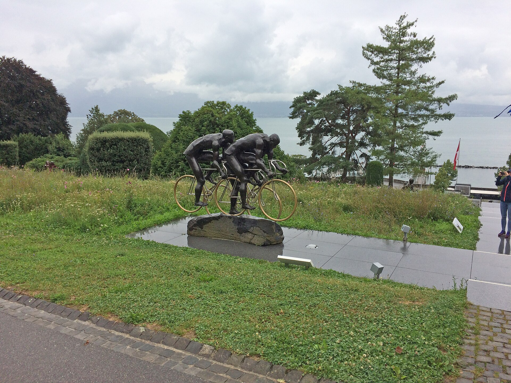
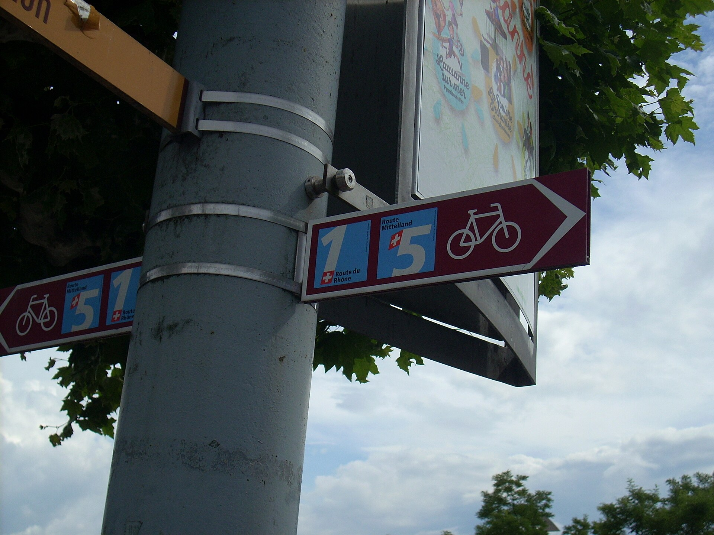
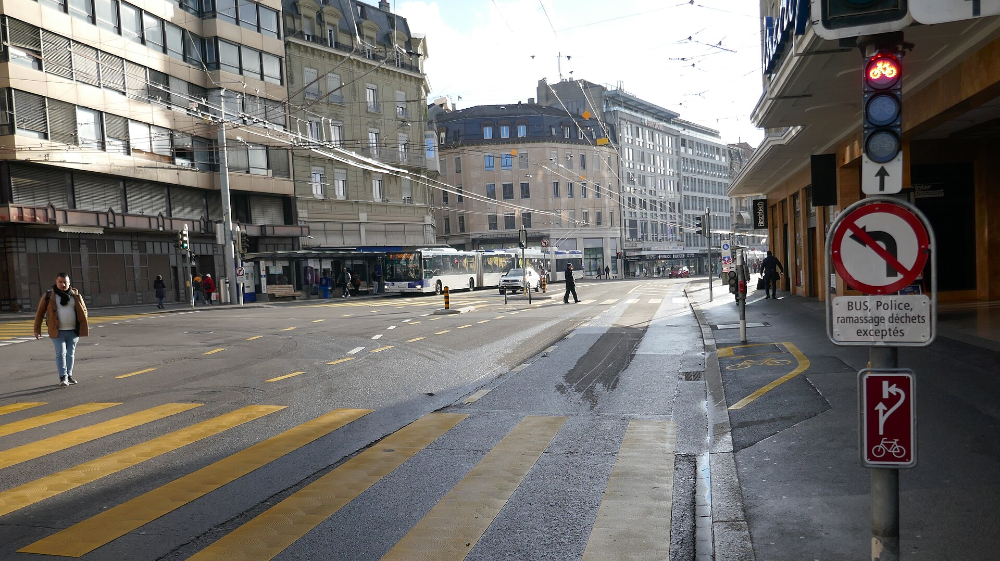

Noleggio biciclette · Losanna
Noleggia una bici per scoprire Losanna
Bici da città, e-bike e mountain bike, consegnate in centro città. Prezzi su richiesta.
Chiedi disponibilità
Tre bici, tre usi
- 01Bici da città
- Comoda per gli spostamenti quotidiani e le passeggiate lungo il lago.
- 02E-bike
- Assistenza moderata per salire verso il centro e i quartieri alti.
- 03Mountain bike
- Per i sentieri nel bosco e i percorsi della Riviera vodese.
Percorsi segnalati

Per raggiungere il lago e la Riviera consigliamo i percorsi segnalati. I tracciati sono indicativi.

Come funziona
- Invia una richiesta con la data e la durata desiderate.
- Confermiamo disponibilità e prezzo via e-mail.
- Ritiri la bici al punto d'incontro concordato, casco incluso.
Contatti
Progetto di prova — contatto fittizio. Nessun indirizzo è pubblicato e nessuna richiesta viene trattata.
Questo servizio non esiste: nessun prezzo, disponibilità o recensione è reale.